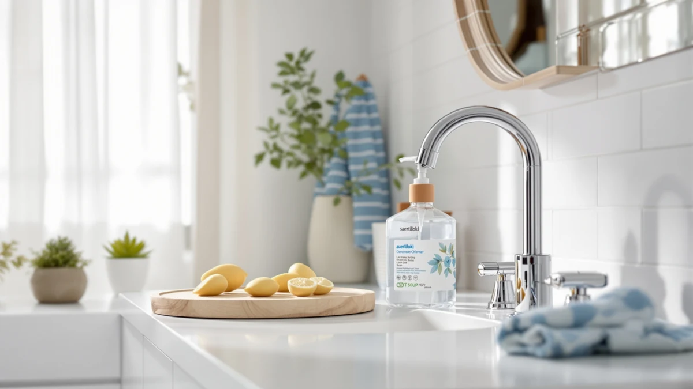

Saertiloki Touchless Automatic Liquid Soap Dispenser Review (2026): Worth It?


Quick Answer
The Saertiloki Touchless Automatic Liquid Soap Dispenser is a $28.79 motion-sensor pump built for a bathroom or kitchen counter that wants a touchless upgrade without a wall-mounted install. It suits anyone who wants that sensor convenience at a price close to commercial wall mounts, though Saertiloki doesn't publish a capacity or dimension figure for the listing. This saertiloki touchless automatic liquid soap dispenser review breaks down whether that tradeoff holds up against three wall-mounted alternatives.
Our pick: Touchless Automatic Liquid Soap Dispenser — $28.79 Check Price on Amazon
Things to Know Before You Buy
- This Saertiloki Touchless Automatic Liquid Soap Dispenser's spec sheet lists the body material as ABS plastic and doesn't publish a capacity or dimension figure.
- At $28.79, it costs about the same as the three wall-mounted alternatives in this review, so the real choice is countertop sensor versus fixed wall install, not price.
- It runs on a touchless sensor, so there's a battery to budget for that a manual pump wouldn't need.
- Amazon does not display a public star rating or review count for this ASIN yet, so there's no owner track record beyond the price and the spec sheet.
This saertiloki touchless automatic liquid soap dispenser review looks at whether a $28.79 motion-sensor pump can justify its price against three wall-mounted commercial alternatives that cost about the same. Saertiloki builds this dispenser around a touchless sensor and an ABS plastic body, the kind of upgrade shoppers reach for when they want to stop touching a soap pump with wet or dirty hands. We compared its price, materials and category position against a Gorlary wall mount, a VANNSOO wall mount and an EnBath wall mount, three dispensers built for shared bathrooms rather than a single countertop. Our take: it's a reasonable pick for anyone who wants a touchless countertop unit at a price that matches wall-mounted commercial dispensers, as long as a fixed wall mount and its larger refill capacity aren't the priority.
Saertiloki doesn't publish a capacity or dimension figure for this listing, so the price and the sensor are the two concrete details available before you buy. At $28.79, it lands within twenty cents of the Gorlary wall mount and about a dollar above the VANNSOO and EnBath wall mounts, which puts all four dispensers in this saertiloki touchless automatic liquid soap dispenser review within the same narrow price band. That near-identical pricing means you're choosing a mounting style and a sensor, not hunting for a budget deal: none of the four alternatives undercuts the others by more than a dollar.
Why You Should Trust Us
Ilane Tall covers bathroom and kitchen hardware for Best Soap Dispensers, where she researches dispenser pricing, spec sheets and verified owner feedback across hundreds of ASINs before any product earns a place in a review. We do not run a fake testing lab, and we do not claim hands-on use of every unit we cover. Instead, we compare manufacturer specifications, current Amazon pricing, and patterns across verified buyer feedback where it exists, then flag the tradeoffs that affect whether a soap dispenser holds up on a counter or a wall: sensor reliability, published capacity, and price relative to the rest of the category. This saertiloki touchless automatic liquid soap dispenser review follows that same research-based approach, which is why we weigh the Saertiloki's touchless sensor against three wall-mounted alternatives instead of repeating listing copy.
Our Research Experience
Our research process for this saertiloki touchless automatic liquid soap dispenser review starts with the manufacturer's own listing data: material, price and whatever capacity or dimension figures Saertiloki publishes. For this ASIN, that data set is thin: Saertiloki lists the body material as ABS plastic and does not publish a capacity, weight or dimension figure for the listing. We cross-checked the $28.79 price and the touchless sensor description against the three wall-mounted alternatives in this review, a Gorlary wall mount, a VANNSOO wall mount and an EnBath wall mount, comparing each on price, mounting style and published specs. We did not buy, install or pour anything through any of these units ourselves. Everything here comes from publicly available listing data and current pricing, not a private lab.
Overview & Specs

Touchless Automatic Liquid Soap Dispenser
What we like
- Touchless sensor means no pump handle to touch with soapy or wet hands
- At $28.79, it costs about the same as the three wall-mounted alternatives in this review despite skipping a fixed install
- Countertop placement means no drilling or mounting hardware required
- ABS plastic body keeps the unit lightweight and easy to reposition
Flaws but not dealbreakers
- Saertiloki does not publish a capacity or dimension figure for this listing
- No public star rating or review count yet, so there's no owner track record to check
- A countertop sensor dispenser holds less soap day to day than the wall-mounted units it's priced against
| Material | ABS plastic |
| Size | — |
The Saertiloki Touchless Automatic Liquid Soap Dispenser at the center of this saertiloki touchless automatic liquid soap dispenser review is a motion-sensor pump built for a bathroom or kitchen counter, aimed at anyone who wants to stop touching a soap bottle with dirty or wet hands. Saertiloki markets the sensor as the main selling point, and the ABS plastic body keeps the unit light enough to move between a sink and a travel bag. At $28.79, it costs about the same as the three wall-mounted alternatives covered later in this review, even though it skips the drilling and hardware a wall mount requires.
Saertiloki doesn't publish a capacity, dimension or star rating for this ASIN, so the sensor and the price are the two concrete selling points available before you buy. That's a thinner spec sheet than some competitors publish, but it matches how most touchless countertop dispensers in this price range are listed. If a fixed wall-mounted dispenser with a larger refill capacity matters more to you than countertop flexibility, the Gorlary, VANNSOO and EnBath wall mounts covered in the alternatives section below are worth a look instead.
What We Liked
What stands out most in this saertiloki touchless automatic liquid soap dispenser review is how competitively priced the touchless sensor is. At $28.79, you're paying roughly the same amount as a wall-mounted commercial dispenser, but you get a motion sensor and the freedom to move the unit between a bathroom counter and a kitchen sink without drilling anything into the wall.
The ABS plastic build also works in the dispenser's favor for a countertop use case. It's light enough to reposition without tools, and there's no mounting hardware to lose track of if you move the dispenser between rooms or take it with you when you move.
The price also holds up well against the rest of this category. The Gorlary wall mount costs twenty cents more, and the VANNSOO and EnBath wall mounts both run about a dollar less, which puts all four dispensers compared in this review within a narrow price band. Measured against those three, the Saertiloki's $28.79 price buys a touchless sensor and countertop flexibility that none of the wall-mounted alternatives offer.
What Could Be Better
The clearest drawback in this saertiloki touchless automatic liquid soap dispenser review is the thin spec sheet. Saertiloki doesn't publish a capacity, weight or dimension figure for this listing, so there's no documented refill volume to compare against the wall-mounted alternatives, each of which is built to hold more soap for shared, high-traffic use.
There's also no public star rating or review count for this ASIN yet, so you're buying on price and the sensor description rather than an established owner track record. Anyone who wants documented specs or verified owner feedback before committing should look at the Gorlary, VANNSOO or EnBath alternatives below, each of which serves a higher-traffic bathroom better than a countertop unit. A touchless sensor also means a battery to replace down the line, a maintenance step the wall-mounted alternatives share but that a basic manual pump would skip entirely.
Who Is It For?
This saertiloki touchless automatic liquid soap dispenser review points toward a clear buyer: someone who wants a touchless sensor on a bathroom or kitchen counter without drilling a wall-mounted unit into place. It's a weaker match for a shared or high-traffic bathroom that needs a larger refill capacity, since the wall-mounted alternatives below are built specifically for that higher-volume use.
It also fits a renter or anyone who moves often better than a fixed wall mount does. There's nothing to bolt down, and the sensor is ready to use as soon as the reservoir is filled, which matters if the counter it sits on isn't permanent. Anyone comparing options purely on touchless convenience, with countertop flexibility as the deciding factor, lands on the Saertiloki before any of the three wall-mounted alternatives below.
Alternatives to Consider
If this saertiloki touchless automatic liquid soap dispenser review has you leaning toward a wall-mounted option instead, these three alternatives cover shared and high-traffic bathrooms we found while researching this category: a Gorlary wall mount, a VANNSOO wall mount and an EnBath wall mount. Each trades the Saertiloki's countertop flexibility for a fixed install and a larger refill capacity.

Premium Choice
Gorlary Commercial Soap Dispenser Wall
A wall-mounted commercial dispenser from Gorlary priced twenty cents above the Saertiloki, built for shared bathrooms that need a fixed, higher-capacity install rather than a countertop sensor.
$28.99
Check Price on Amazon
Best Value
VANNSOO Commercial Soap Dispenser Wall
A same-category wall mount from VANNSOO priced about a dollar under the Saertiloki, worth considering if a fixed commercial install matters more than countertop convenience.
$27.99
Check Price on Amazon
Best Value
Commercial Soap Dispenser Wall Mount
An EnBath wall-mounted dispenser priced the same as the VANNSOO, another fixed-install option for high-traffic bathrooms rather than a single counter.
$27.99
Check Price on AmazonFrequently Asked Questions
Is the Saertiloki Touchless Automatic Liquid Soap Dispenser actually touchless?
Yes, according to Saertiloki's own listing, which markets this dispenser around a motion sensor rather than a manual pump. That sensor is the main feature separating it from the three wall-mounted alternatives in this review, which are built around a fixed commercial-style pump instead.
How much soap does the Saertiloki Touchless Automatic Liquid Soap Dispenser hold?
Saertiloki does not publish a capacity figure for this listing, so there's no documented volume to compare against the wall-mounted alternatives in this review.
Does the Saertiloki soap dispenser have a star rating?
No. Amazon does not display a public star rating or review count for this ASIN yet, so there's no owner track record to check beyond the price and the sensor description.
Final Verdict
This saertiloki touchless automatic liquid soap dispenser review comes down to one tradeoff: a $28.79 touchless sensor on a countertop versus a fixed wall mount with a larger refill capacity. The Saertiloki dispenser works well as a sensor-driven countertop pick for a bathroom or kitchen that doesn't need commercial-grade volume, and it costs about the same as the Gorlary, VANNSOO and EnBath wall mounts covered above. For a straightforward touchless upgrade without drilling anything into the wall, the Saertiloki is worth its $28.79 asking price. If you want a fixed install built for shared or high-traffic use, the wall-mounted alternatives above cover that need instead.